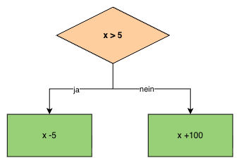

Bedingungen (1/2)
Lernziel
Am Ende dieser Lektion wendest du Vergleichs- und logische Operatoren an, setzt if- und if-else-Bedingungen um, stellst Verzweigungen im PAP mit der Raute dar und verschachtelst Bedingungen korrekt.
1. Einstieg
- Fast jedes Programm muss Entscheidungen treffen – ohne Bedingungen könnte ein Programm nie auf unterschiedliche Eingaben unterschiedlich reagieren.
- Vergleichs- und logische Operatoren sind die Bausteine, mit denen du solche Entscheidungen formulierst.
- Wer Klammern und Einrückung bei verschachtelten Bedingungen nicht sauber setzt, produziert einen der häufigsten Anfängerfehler in C#.
2. Grundlagen
A - Vergleichs- und logische Operatoren
Vergleichsoperatoren
| Operator | Bedeutung |
|---|---|
== |
gleich |
!= |
ungleich |
> |
grösser als |
< |
kleiner als |
>= |
grösser gleich |
<= |
kleiner gleich |
int alter = 17;
Console.WriteLine(alter >= 18); // False
Das Ergebnis eines Vergleichs ist immer ein bool – true oder false.
Logische Operatoren
| Operator | Bedeutung | Beispiel |
|---|---|---|
&& |
UND – beide müssen wahr sein | alter >= 18 && hatAusweis |
|| |
ODER – mindestens eine wahr | istSamstag || istSonntag |
! |
NICHT – kehrt um | !istFertig |
bool darfFahren = alter >= 18 && hatFuehrerschein;
B - if und if-else
Einseitige Auswahl (if)
if (x > 10)
{
Console.WriteLine("x ist grösser als 10.");
}
Wird nur ausgeführt, wenn die Bedingung wahr ist – sonst übersprungen.
Zweiseitige Auswahl (if-else)
if (x > 10)
{
Console.WriteLine("x ist grösser als 10.");
}
else
{
Console.WriteLine("x ist 10 oder kleiner.");
}
C - PAP: Die Raute
Neu im PAP: Die Raute (◇) stellt eine Bedingung dar, mit zwei Ausgängen: ja und nein.

D - Verschachtelte Bedingungen
Innerhalb eines if- oder if-else-Blocks kann eine weitere if- bzw. if-else-Anweisung stehen:
if (x > 10)
{
if (x < 15)
{
Console.WriteLine("x liegt zwischen 11 und 14.");
}
Console.WriteLine("x ist mindestens 11.");
}
else
{
Console.WriteLine("x ist 10 oder kleiner.");
}
⚠️ Klammern und Einrückung genau beachten – ein if ohne {} bezieht sich nur auf die direkt folgende Anweisung.
Eine Verschachtelung lässt sich oft mit && zu einer einzigen Bedingung zusammenfassen:
// verschachtelt
if (x > 10)
{
if (x < 15)
{
...
}
}
// gleichwertig, mit &&
if (x > 10 && x < 15)
{
...
}
3. Übungen
1. PAP zeichnen
Zeichne einen PAP für: "Prüfe, ob eine eingegebene Zahl positiv, negativ oder null ist."
2. Code lesen I
Was gibt das Programm aus, wenn folgende Werte eingegeben würden?
- a) Zahl 1 = 6, Zahl 2 = 3
- b) Zahl 1 = 7, Zahl 2 = 7
Console.Write("Zahl 1:");
int zahl1 = Convert.ToInt32(Console.ReadLine());
Console.Write("Zahl 2:");
int zahl2 = Convert.ToInt32(Console.ReadLine());
if (zahl2 < zahl1 && zahl1 > 5)
{
int temp = zahl1;
zahl1 = zahl2;
zahl2 = temp;
}
else
{
if (zahl1 == zahl2)
zahl1 = 5;
zahl2 = 8;
}
Console.WriteLine("Ausgabe 1 = " + Convert.ToString(zahl1));
Console.WriteLine("Ausgabe 2 = " + Convert.ToString(zahl2));
3. Fehler erkennen
Das folgende Programm sollte drei Werte (Wert 1, Wert 2 und Wert 3) vom Benutzer entgegennehmen und den grössten der drei Werte ausgeben. Leider haben sich zwei Fehler eingeschlichen. Bestimme, bei welcher Zeile (Zeilennummer) ein Kompilierfehler auftritt und warum. Korrigiere ihn.
01 int anzahl = 1;
02 double wert1 = 0, wert2 = 0, wert3=0, max= 0;
03 Console.Write("Wert " + Convert.ToString(anzahl++) );
04 wert1 = Convert.ToDouble(Console.ReadLine());
05 Console.Write("Wert " + Convert.ToString(anzahl++));
06 wert2 = Convert.ToDouble(Console.ReadLine());
07 Console.Write("Wert " + Convert.ToString(anzahl++));
08 wert3 = Convert.ToDouble(Console.ReadLine());
09 if (wert1 > wert2 && > wert3)
10 max = wert1;
11 else
12 {
13 if (wert2 > wert3)
14 max = wert2;
15 else (wert3 > wert2)
16 max = wert3;
17 }
18 Console.WriteLine("Der grösste Wert ist:"+ Convert.ToString(max));
4. Ringen 🤼♀️
Beim Ringen wird in verschiedenen Gewichtsklassen gerungen:
| Gewichtsklasse | Männer | Frauen |
|---|---|---|
| Fliegengewicht | bis 55kg | bis 48kg |
| Leichtgewicht | bis 66kg | bis 55kg |
| Mittelgewicht | bis 84kg | bis 63kg |
| Schwergewicht | ab 85kg | ab 64kg |
Schreibe ein Programm, das den Benutzer zur Eingabe der beiden Informationen Geschlecht und Gewicht auffordert. Ermittle mit Hilfe von Verzweigungen die passende Gewichtsklasse und gib sie aus.
Beispiel: Geschlecht = m, Gewicht = 75 → Ausgabe: Gewichtsklasse: Mittelgewicht
5. Kino 🍿 (optional)
Im Kino Luxor läuft ein Film, der ab 12 Jahren freigegeben ist. Kinder ab 9 Jahren dürfen den Film trotzdem sehen, wenn sie von einer erwachsenen Person begleitet werden.
Für den Eintritt gelten folgende Preise:
| Kategorie | Bedingung | Preis |
|---|---|---|
| Kinder | unter 12 Jahren | CHF 10.– |
| Ermässigt | 12 bis 17 Jahre oder Studierende oder ab 65 Jahren | CHF 13.– |
| Erwachsene | alle anderen | CHF 18.– |
Schreibe ein Programm, das den Benutzer nach drei Informationen fragt:
- Alter [in Jahren]
- Studierende/r [j/n]
- In Begleitung einer erwachsenen Person [j/n]
a) Prüfe zuerst mit Hilfe von logischen Operatoren, ob die Person den Film sehen darf. Darf sie den Filme nicht sehen, gib in der Konsole "Kein Zutritt" aus. Andernfalls ermittelst du den passenden Eintrittspreis und gibst ihn aus (z.B. "Eintritt: CHF 13.-").
b) Am Dienstag ist Kinotag. Alle Personen ab 12 Jahren bezahlen dann CHF 12.-, Kinder bleiben bei CHF 10.-. Erweitere dein Programm um die Eingabe des Wochentags.
4. Weiterführende Beispiele und Gedanken
- Achtung, typische Stolperfalle: Ein
elseohne eigene Bedingung fängt einfach "alles andere" auf – einelse (bedingung)ist ungültige Syntax. - Nächste Lektion: switch-case als Alternative zu langen
else if-Ketten, sowie komplexere Algorithmen mit mehreren Bedingungen. - Überlege: Bei welchen Entscheidungen in deinem Alltag reicht eine einzige Bedingung, und wo brauchst du mehrere verschachtelte oder verknüpfte Bedingungen (z.B. Versandkosten, Notenskala)?